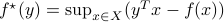

Formulation of inverse lithography
jemdoc includes support for LaTeX equations. LaTeX source embedded in jemdoc files is processed by calling latex and dvipng (which must both be available for this feature). Resulting PNG images are then placed on the web page. Equations are typeset using pure LaTeX.
jemdoc equation support relies on several pieces, any of which may break. No guarantees! Support may be limited.
Inline equations
The conjugate function  appears here
inline, and is in the variable  . Dollar signs ($) surround the LaTeX
equation in the jemdoc source.
. Dollar signs ($) surround the LaTeX
equation in the jemdoc source.
Syntax
The sample function $f^\star(y) = \sup_{x \in X}(y^Tx - f(x))$
appears here inline, and is in the variable $y$.